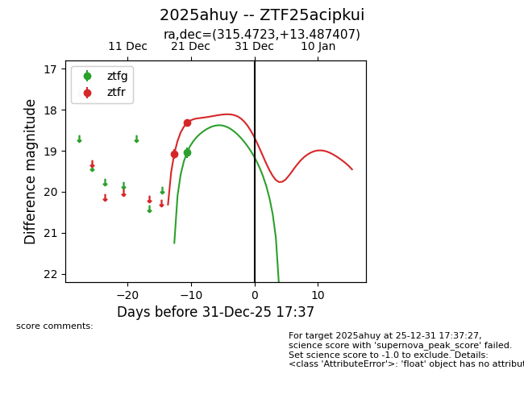
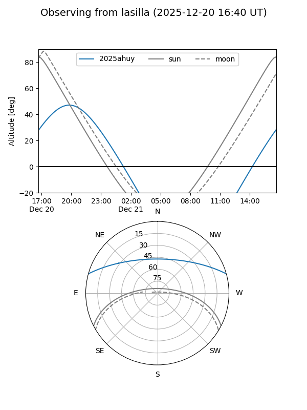
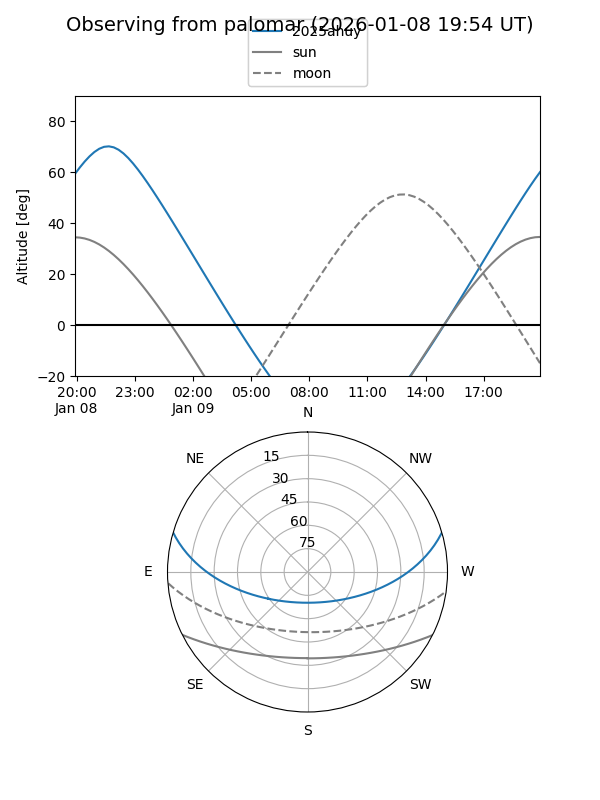
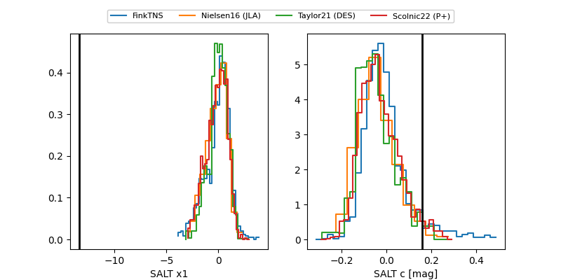

2025ahuy
Target 2025ahuy at 2025-12-21 04:03
Aliases and brokers:
FINK: fink-portal.org/ZTF25acipkui
Lasair: lasair-ztf.lsst.ac.uk/objects/ZTF25acipkui
ALeRCE: alerce.online/object/ZTF25acipkui
TNS: wis-tns.org/object/2025ahuy
YSE: ziggy.ucolick.org/yse/transient_detail/2025ahuy
alt names
ZTF25acipkui (ztf,fink_ztf)
2025ahuy (tns,yse)
Coordinates:
equatorial (ra, dec) = 315.4723,+13.48741
equatorial (HMS+DMS) = 21:01:53.35,+13:29:14.67
galactic (l, b) = (61.5300,-21.10563)
Flags:
Photometry:
last ztfg=19.05, ztfr=19.08
1 ztfg, 1 ztfr detections
Lightcurve

Visibility


Additional plots
